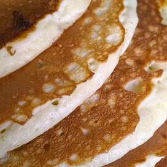

Easy Pancakes

Simple yet delicious pancakes !
Ingredients :
- 1 cup all-purpose flour
- 2 tablespoons white sugar
- 2 teaspoons baking powder
Steps :
- In a large bowl, mix flour, sugar, baking powder and salt. Make a well in the center, and pour in milk, egg and oil. Mix until smooth.
- Heat a lightly oiled griddle or frying pan over medium high heat. Pour or scoop the batter onto the griddle, using approximately 1/4 cup for each pancake. Brown on both sides and serve hot.